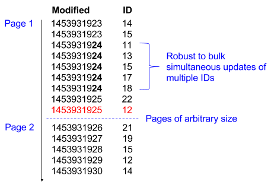

This specification tackles the generic use-case of unidirectional real-time data synchronisation between two systems, where the receiving system requires only summary data from the origin system.
Comments on this document are not only welcomed but are actively solicited and should be made on GitHub Issues. The source code is available on GitHub.
The Openactive specifications are modular, each focussing on a specific use cases regarding physical activity data.
The W3C Openactive Community Group was established with the objective of facilitating the sharing and use of physical activity data. The motivation for that is physical activity data is currently largely closed, and sharing and opening up of this data has enormous potential.
This specification tackles the generic use-case of unidirectional real-time data synchronisation between two systems, where the receiving system requires only summary data from the origin system.
The purpose of the document is to represent an early draft. It is likely to change, so this document should only be used to guide implementations in conversation with the Openactive community where the quick win of data sharing and shared learning are high priorities.
Other aspects of the Community Group's work, which includes the collation and specification of test suites to assess conformance to referenced standards, and the specification of a framework within which such conformance testing might be assessed are referenced.
1.1 Scope
This standard is tightly defined to cover data exchange and synchronisation itself; to cover the real-time exchange of generic entities between two systems.
Goals:
Sharing of session data, including related metadata (clubs, courses, membership requirements, skill level, cost), and events (e.g. open days).
Paging and synchronisation to ensure robust incremental transport of data.
Allows a client to "refresh its cache", by providing the facility to download all data.
(Stretch goal) Extendable to support real-time, high volume data transfer, to satisfy peak load requirements.
Non-Goals:
User Authentication.
Booking and payment.
Availability of courts and facilities.
Membership packages.
Standardisation of content (e.g. "Football" = "Soccer").
1.2 Objectives
Easy to understand
Simple to implement (does not require complex libraries)
Based on existing standards where possible
Minimalistic (focus on removing complexity)
Minimise traffic between services
Robust to errors and failed requests
Capable of scaling to handle high volumes
2. Conformance
As well as sections marked as non-normative, all authoring guidelines, diagrams, examples,
and notes in this specification are non-normative. Everything else in this specification is
normative.
This specification describes the conformance criteria for Openactive data synchronisation endpoints.
3. Overall approach
In order to create a simple standard that is robust and scalable, the transport mechanism is separated from the paged exchange specifics. By applying paging to all transport alternatives, the approach is inherently scalable.
4. Robust Paged JSON Data Exchange
A paged approach to JSON data exchange requiring minimum traffic for real-time or near-real-time synchronisation
The paged JSON data exchange standard is incredibly simple to implement, but conceptually requires some explanation.
Consider the data exchanged as pages of a continuous stream of records which are sorted first by modified timestamp, and second by ID. This dual sort allows for pages of arbitrary size to be sent without concern for race conditions; if a record is updated during the transfer it will simply reappear further down the stream. If the consumer reaches the end of the stream they are up-to-date, and can frequently revisit the end of the stream in order to retrieve further updates.

Specifically, a JSON page is exchanged, the content of which is defined by two parameters:
from: the modified timestamp, after which results will be returned (if not specified will return from beginning of time)
after: the ID after which results will be returned (if not specified will return all IDs from the first)
Note that the "modified timestamp" ("from" parameter) does not need to be an actual time that can be associated with a clock to conform to this standard; a database-wide counter is sufficient (such as SQL Server's timestamp or rowversion, the former deprecated as of SQL Server 2012 in favour of the latter). The consumer ("System 2") maintains a timestamp cursor for each endpoint independently, so at a minimum the "modified" field must provide a deterministic chronological ordering within the scope of the endpoint only.
In the example diagram above, from=1453931925&after=12 would return the second page indicated, hence the last record of a returned page of results can be used as parameters to retrieve the next page of results. This paging allows for an ongoing data synchronisation that synchronises all data, which can be replayed arbitrarily by the client.
For a single entity type (e.g. sessions), the data returned can be defined as follows:
A suggested generic response standard is included here, the idea being that we standardise the transport encapsulation for the records (paging and polling logic) across entities and systems so that, we can genericise this logic on both sides.
Key
Description
items
An array of <item>, which should simply by empty [] if no results are returned.
next
For polling, the "next" URL in the response is a precomputed next URL that would be called by the client to get the next page (which would be polled after a delay if the previous page had returned no data). Note "polling" and "paging" are differentiated only by the duration between requests. Although an example endpoint name is provided, this is outside the scope of this standard.
Deleted items are included in the response with a "deleted" state, but no <data> associated.
kind
The "kind" attribute allows for the representation of different entity types. The standard does not advocate embedding of child entities if they change more frequently than the parent. Each entity type ("kind") can be synchronised separately, this allows us to decouple the sync logic from the data structure, and allows us to reassemble the data structure on the client side. It also makes the implementation very simple.
id
Although IDs shown here are GUIDs, and above are numeric, and although the example above shows Unix timestamps, the standard does not prescribe any specific format of either.
modified
Modified timestamp of the item. Must be comparable to itself.
data
Note this key is not included if state is 'deleted'
These transport options cover different levels of complexity and data volume. Note that in all cases polling must be implemented to support a full cache refresh and data download. The real-time transport mechanisms work alongside infrequent polling to keep the data current.
In the case of real time transport failure, a production client implementation can fall back to polling.
Transport Options
Advantages
Disadvantages
Primary Use Case
Polling (Simple download)
Simple to implement
Does not provide a real-time feed, and heuristic polling will result in patchy sync
Full cache refresh (also can be used in isolation for prototype implementation).
Webhooks (Real-time)
Less traffic than polling, more server-side control, allows for real-time, uses standard REST interface
Uses many high-latency connections
Basic production implementation
Server-Sent Events (Real-time)
Optimisation over webhooks as uses one connection, so can handle higher volume
Requires additional libraries
High volume production implementation
AMQP (Real-time)
Pages can be handed off to the queue to facilitate even higher volume than Server-Sent Events
Requires additional infrastructure
Very high volume production implementation
5.1 Polling
A basic REST endpoint which accepts the from and after parameters is required to allow a full cache refresh / data download on demand (e.g. /getSessions?from=Date(b)&after={d97f73fb}).
For cases where only a polling endpoint is available, the client will poll the endpoint using heuristic backoff.
Implementation of at least one other type of endpoint is recommended in order to enable real-time updates.
5.2 Webhooks
Webhooks use the same mechanism as polling, except that pages are pushed from server to client, rather than requested explicitly by the client from the server.
The client registers an endpoint with the server, and the server repeatedly sends subsequent pages to the client. Using the same paging features as with polling allows the server to batch items to increase throughput.
When sending a particular page to the client the server is expected to wait for a successful acknowledgement of the page before sending the next page. If sending of a page fails that page should be continuously retried with an exponential backoff. The server should only proceed to the following page after successfully sending the previous one.
Note that during a full cache refresh the client will page the server for all data, and may simultaneously be receiving webhook requests from the client. Using the timestamp of each record to ensure records are only updated with newer data, the client is able to perform both the full cache refresh and receive webhook requests simultaneously. Alternatively the client can choose to drop webhook requests until its full cache refresh is complete, which should trigger the exponential backoff behaviour from the server, ensuring a good crossover in items between the end of the cache refresh and the webhook updates resuming.
Note that the "next" from the response is not required here. Instead, from and after should be stored for each client of the server, in order that the server is able to send the relevant next page to each client.
5.3 Server-Sent Events
Server-Sent Events (over HTTPS) provides a simple and efficient channel through which a high volume of updates can pass. Although an additional library may be required depending on the servers' platform, it is a very light implementation.
The responsibility is on the client to reestablish a connection to the server and inform it of the last retrieved record in order to continue the stream, which is closer to polling than to webhooks.
Only the <item> from the <response> is required here, and is passed as "data" (the Server-Sent Event specification of "data", which is different from the "data" part of the item). The explicit paging used with polling and webhooks is made redundant as this is a continuous stream over one connection.
The event type is always set to "itemupdate", as the state of each item is set with the "state" field consistent with polling.
AMQP (RabbitMQ et. al.) provides a two way channel for events which includes buffering and multiple connections to increase throughput.
As with Server-sent events, only the <item> from the <response> is required to be sent in the message, as AMQP makes the explicit paging redundant.
For very high volumes, this allows the server to send multiple pages in parallel, as it can calculate the "from" and "after" parameter and control the send. The client can also process these in parallel (particularly useful in the case of shared or No-SQL data stores, with scaling queue processors), using the timestamp of each record to ensure records are only updated with newer data.
However this requires additional infrastructure and the use of certificates (more complex to configure than HTTPS).
6. Implementation
Three common patterns of implementation are presented, along with specific advantages and disadvantages of each, together with miscellaneous notes.
6.1 Single JSON entity cache table
Create a cache table which is written to on each entity change (or related entity change, if a calculated field is created), either via an application or database trigger (which can also be used to trigger the webhook). The table contains the rendered JSON <item>, along with the modified timestamp and the ID.
Entries in the table overwrite old items with a newer modified timestamp.
This table can be easily parsed into output for the client. This has the advantage of allowing one endpoint and one process to manage the real-time sync by watching this single table, as the table can maintain a sort and page across all entity "kinds".
6.2 Multiple table on-demand JSON generation
The JSON is generated from each table individually at the point that is requested by either the webhook or poll.
An endpoint will be required for each entity "kind", as the sort cannot efficiently happen across tables. These endpoints would require separate webhook / polling processes to keep them in sync (though the webhooks can all share the same endpoint on the client).
6.3 Hybrid approach: paging table
A paging table could be created that contains only the Kind, Modified Timestamp and ID. This table is then updated with each entity update, however the JSON is only generated on-demand by getting the next page from the paging table and rendering JSON for each of IDs of the "kinds" returned.
6.4 Additional notes
6.4.1 Calculated fields (e.g. available spaces or available tickets for a session)
As some entities will not need to be synchronised, but fields calculated from them will need to be known to the client (e.g. the "tickets" table may not need to be synchronised, but the "available tickets" calculated field on the "sessions" table will be required).
The suggested approach is to calculate the field "available tickets" and store it in the "sessions" table on each ticket sale. This has three advantages:
It keeps the application logic for such calculation together with the original action.
It creates a cached value that can be used in other parts of the application to increase performance.
It prevents the creation of complex calculations which are used only on-demand for the purposes of data synchronisation.
An alternative could be to calculate it on each synchronisation, however this will slow down the sync. Assuming that reads will occur on this calculated data more frequently than writes, caching the calculated field is recommended.
6.4.2 Strict ordering of items
For high-throughput AMQP, when updating data in the client's index, the timestamp of each record will be used to ensure records are only updated with newest data. Although this technique can be used specifically for AMQP, all other methods of transport must adhere to a strict ordering of items by modified timestamp and ID (per kind) in order to ensure data consistency. Ordering between kinds is not important.
6.4.3 Database Triggers (MS SQL Server example)
If using a
timestamp/rowversion field on the parent table as the "modified timestamp", using the trigger below for each child table will update the rowversion field in the relevant rows on the parent table when the child table is updated.
The SET SomeColumn = SomeColumn part of this trigger could easily be replaced with setting materialised calculated fields (e.g. "total number of tickets sold") which contain the summary data required by "System 2". This reduces the need to join the child table during the API endpoint response, which helps to optimise the endpoint.
The example below has been adapted from here, see here for an explanation of the mechanics.
CREATETRIGGER tgUpdateParentRowVersion ON ChildTable FORINSERT, DELETE, UPDATEASBEGIN/*
* The updates below force the update of the parent table rowversion
*//* Materialised field calculation goes here*/UPDATE ParentTable
SET SomeColumn = SomeColumn
FROM ParentTable a
JOIN inserted i on a.pkParentTable = i.fkParentTable
UPDATE ParentTable
SET SomeColumn = SomeColumn
FROM ParentTable a
JOIN deleted d on a.pkParentTable = d.fkParentTable
END
A. Acknowledgements
This section is non-normative.
The editors thank all members of the Openactive CG for contributions of various kinds.